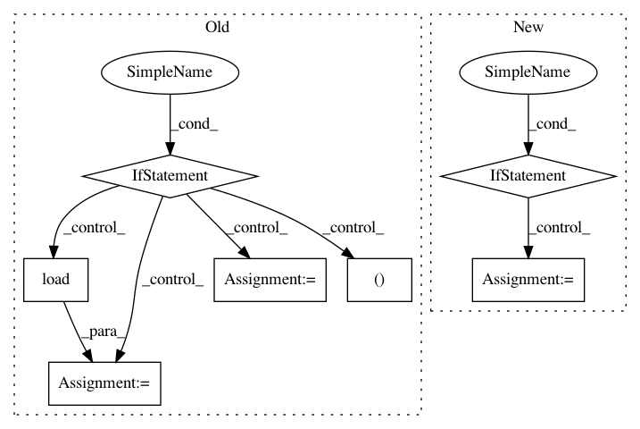

b0a78567606a3ff24437501fc83239181b9478b3,pyannote/audio/features/utils.py,,read_audio,#Any#Any#Any#,91
Before Change
// sphere files
if current_file["audio"][-4:] == ".sph":
// dump sphere file to a temporary wav file
// and load it from here...
from sphfile import SPHFile
sph = SPHFile(current_file["audio"])
with tempfile.NamedTemporaryFile() as f:
sph.write_wav(f.name)
y, sample_rate = librosa.load(f.name, sr=sample_rate, mono=False)
// all other files
else:
y, sample_rate = librosa.load(current_file["audio"],
sr=sample_rate,
mono=False)
// reshape mono files to (1, n) [was (n, )]
if y.ndim == 1:
y = y.reshape(1, -1)
// extract specific channel if requested
After Change
y = np.mean(y, axis=1, keepdims=True)
// resample if sample rates mismatch
if file_sample_rate != sample_rate:
y = librosa.core.resample(y.T, file_sample_rate, sample_rate).T
return y, sample_rate
class RawAudio(object):
In pattern: SUPERPATTERN
Frequency: 3
Non-data size: 7
Instances
Project Name: pyannote/pyannote-audio
Commit Name: b0a78567606a3ff24437501fc83239181b9478b3
Time: 2019-02-28
Author: pavel.korshunov@idiap.ch
File Name: pyannote/audio/features/utils.py
Class Name:
Method Name: read_audio
Project Name: snipsco/snips-nlu
Commit Name: 5cb31b24772202d34175b7c7f42c6b1792dd6dd4
Time: 2017-03-31
Author: adrien.ball@snips.net
File Name: snips_nlu/preprocessing.py
Class Name:
Method Name: language_stems
Project Name: nipy/dipy
Commit Name: 1fc54fd0060ba22783727bb92f414fce7b36fbec
Time: 2010-12-18
Author: garyfallidis@gmail.com
File Name: dipy/reconst/gqi.py
Class Name: GeneralizedQSampling
Method Name: __init__